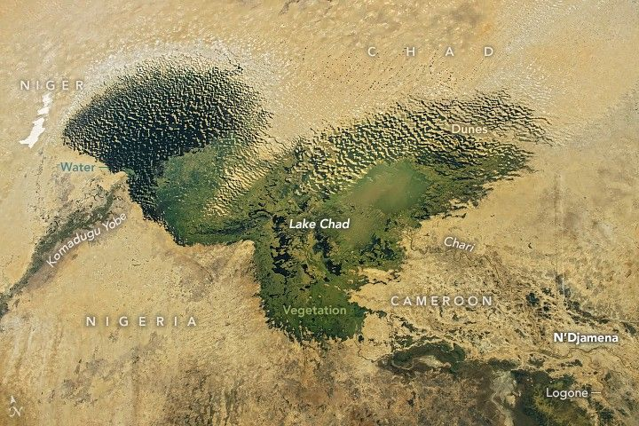

Lake Chad’s Water, Wetlands, and Dunes
An astronaut aboard the International Space Station captured this photograph of Central Africa’s Lake Chad, which once ranked among the largest natural lakes in the world.
Lake Chad spans the borders of four countries: Cameroon, Niger, Nigeria, and Chad. The lake’s main sources of water are the Chari and its tributary, the Logone, which flow into the southern side of the lake. Other rivers, like the Komadugu Yobe, empty into the lake’s western end. N’Djamena, Chad’s capital city, appears as a gray-toned area blending into the surrounding landscape (bottom right).
As one of the lowest-lying areas in the region, Lake Chad is the catchment for a large hydrographic basin. Ongoing droughts and rising demand for fresh water have shrunk the lake to less than a tenth of the area it covered in the mid-20th century. Although the lake has experienced dry and wet periods for thousands of years, there has been a significant decline in water availability since the 1960s.
The evolution of Lake Chad has been documented by astronaut photography over the past 60 years. During the Apollo 7 mission in 1968, an astronaut acquired an oblique photograph of the lake as one large body of water. In 1982, another photo from the space shuttle mission STS-5 recorded receding water levels and encroaching sand dunes. Wind gusts pick up fine grains of silty sand and deposit them downwind, creating dunes on what was once the lakebed. Transverse dunes indicate that the dune-forming winds are primarily from the northeast.
A photo taken in 2015 during space station Expedition 42 captured the lake’s remaining waters and wetlands in dark green, blue, and brown, contrasting with the sandy shades of the surrounding land. The continuing encroachment of dunes across the former expanse of the lake is well illustrated in this image.